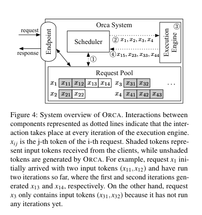
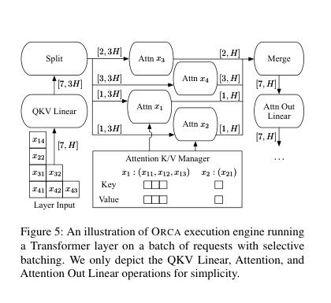
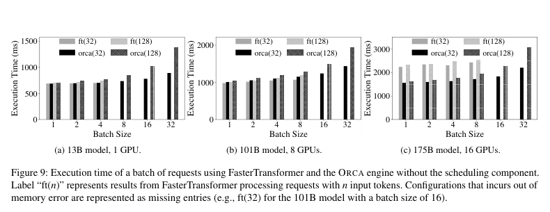
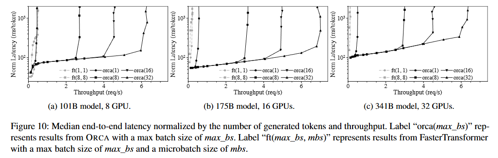

Orca（OSDI 2022）
RLP 关心的是开始运行前怎样按预测长度分组（静态）；Orca 关心的是一个 batch 已经开始生成以后，成员能不能随时退出，新请求能不能随时加入（现有vLLM 的continuous batching方案）
旧执行引擎：
| 轮次 | A | B | 时间点 |
|---|---|---|---|
| 1 | 生成 token | 生成 token | — |
| 2 | 生成 EOS，已经完成 | 生成 token | 新请求 C 到达 |
| 3 | 已完成但批还没结束 | 生成 token | C 只能排队 |
| 4 | 已完成但批还没结束 | 生成 token | C 继续等待 |
| 5 | 已完成 | 完成 | 整批结束后 C 才能开始 |
执行过程中的每一轮，调度器没有控制权，导致浪费：
- 提前完成：A 已经结束，却不能立即从固定 batch 中释放；旧实现可能继续为它执行占位计算，至少也浪费一个 batch 位置。
- 晚到请求：C 明明在第 2 轮就到达，却必须等 B 完成，GPU 不能用 A 空出的槽位处理 C。
Design
1.Iteration-level Scheduling
Iteration 在这里就是模型向前执行一次、为每个 decode 请求产生下一个 token 的一轮。Orca 不再一次下达完成整个请求的命令，而是只下达执行下一轮的命令。
| 轮次 | 本轮 Batch | 动作 |
|---|---|---|
| 1 | A、B | A、B 各生成一个 token |
| 2 | A、B | A 结束并立即离开；C 到达等待 |
| 3 | B、C | C 立即使用 A 空出的并行位置 |
| 4 | B、C | 每轮继续重新选择 |

又上提出四个组件：
- Endpoint：接收用户请求、返回最终结果，可理解为 API 入口。
- Request Pool：保存系统中所有等待或正在生成的请求，以及已经生成的 token。
- Scheduler：每一轮从 Request Pool 选择下一批请求。
- Execution Engine：真正运行分布在一张或多张 GPU 上的模型，但每次只执行一轮。
交互过程：
① Scheduler 查看 Request Pool
② 选出 x1、x2、x3、x4，通知 Execution Engine
③ Engine 为四个请求各执行本轮计算
④ 返回 x15、x23、x33、x44
⑤ Scheduler 更新各请求状态，下一轮可以换一组请求接下来的问题是：随意选出的请求并不天然能够组成 GPU batch，GPU batch 通常要求参与同一算子的张量形状兼容
比如可能选中的请求为：
| 请求 | 所处阶段 | 本轮要处理的内容 |
|---|---|---|
| A | Prefill / initiation | 200 个输入 token |
| B | Prefill / initiation | 500 个输入 token |
| C | Decode / increment | 第 21 个 token |
| D | Decode / increment | 第 103 个 token |
出现三种不整齐：
- A、B 都在 Prefill，但 prompt 长度分别为 200 和 500。
- C、D 都在 Decode，但历史 KV 长度分别为 20 和 102。
- A、C 甚至处于不同阶段：A 一轮处理整个 prompt，C 一轮只处理一个新 token。
如果要求所有算子的输入形状完全一致才能 batch，那么动态选择的请求几乎无法合批，iteration-level scheduling 就失去 GPU 并行收益。
2.Selective Batching
insight：Transformer 里的算子并非都需要知道 token 属于哪个请求。
以四个请求为例，本轮需要处理的 token 数分别是 1、1、2、3，总计 7 个：
请求 x1：1 个 token
请求 x2：1 个 token
请求 x3：2 个 token
请求 x4：3 个 token
合计：7 个 tokenLinear、LayerNorm、GeLU 等普通算子对每个 token 做相同变换，不会让不同请求互相读取上下文。因此可以先忘记 batch 边界，把 7 个 token 展平成一个大矩阵：
[1,H] + [1,H] + [2,H] + [3,H]
↓
[7,H]但遇到attention之后又拆出来计算完再合并，attention要和相应的 KV 计算：

QKV Linear对拼在一起的 7 个 token 批量计算。Split根据请求边界拆成 1、1、2、3 个 token。Attn x1到Attn x4分别读取各自的历史 KV，独立计算 Attention。Merge再把四份 Attention 输出拼回[7,H]。- 后面的
Attention Out Linear又可以批量执行。
3.调度算法
Orca 使用 iteration-level FCFS。FCFS 是 First Come, First Served，即先到先服务。论文给出更严格的定义：如果 A 比 B 早到，那么 A 已经执行的 iteration 数不能少于 B。这可以防止晚到请求不断插队，让早到请求饿死。
调度还受两个限制：
限制一：max batch size。 Batch 越大，吞吐通常越高，但单轮耗时和 latency 也可能增加，而且收益会逐渐变小。因此管理员设置 max_batch_size，每轮最多选择这么多请求。
限制二：KV Cache slot。 请求首次进入时，Orca 按它声明的 max_tokens 预留 KV 空间。例如请求最多生成 512 token，就提前保证 512 个位置可用。空间不足时不接纳新请求，避免运行到一半 OOM。（后续论文优化：Efficient Memory Management for Large Language Model Serving with PagedAttention 作者：Woosu，按需分配，随生成过程逐 block 增长，将显存按block划分,不要求同一请求的所有 block 在物理显存中连续）
Experiment
| 项目 | 设置 | 说明 |
|---|---|---|
| 集群 | Azure ND96asr A100 v4 | 2022 年 Azure GPU 实验环境 |
| 每节点 | 8×A100 40GB，NVLink | 节点内 GPU 高速互连 |
| 节点间 | 8×200 Gbps InfiniBand，合计 1.6 Tb/s | 支撑跨节点的 175B/341B |
| 模型 | GPT 13B、101B、175B、341B，FP16 | 覆盖单 GPU到 32 GPU |
| 13B | 1 GPU | 单卡模型 |
| 101B | 8 GPU | 单节点 tensor parallel |
| 175B | 16 GPU | 两个 pipeline stage，每 stage 8 GPU |
| 341B | 32 GPU | 最多四节点 |
| 输入长度 | 从 32–512 均匀随机采样 | 模拟不同 prompt 长度 |
| 输出长度 | 从 1–128 均匀随机采样 | 制造早结束/晚结束差异 |
| 到达时间 | Poisson 随机到达 | 模拟在线请求 |
| Baseline | FasterTransformer + 论文作者实现的外部 scheduler | SOTA |
纯引擎 Microbenchmark

暂时关闭 Orca 动态 scheduler，让 Orca 和 FasterTransformer 处理完全相同的固定 batch。横轴是 batch size，纵轴是完成整批所需 execution time，柱越低越好。orca(32) 表示每条请求输入 32 token；ft(128) 表示 FasterTransformer 输入 128 token。
- 13B/1 GPU、101B/8 GPU：两者整体接近，Orca 有时略慢，因为 Attention 没有整体合批。
- 175B/16 GPU：Orca 最多快 47%，论文认为主要来自控制信息与 GPU 数据通道分离。
只证明 Orca execution engine 本身没有比 baseline 差很多，不能证明动态调度的端到端收益。

完整在线调度实验
当前裁剪图只有一排三个子图，从左到右分别是：
| 子图 | 模型 | GPU |
|---|---|---|
| (a) | GPT-101B | 8 |
| (b) | GPT-175B | 16 |
| (c) | GPT-341B | 32 |
三个子图坐标含义相同：
- 横轴：吞吐
req/s。 - 纵轴：median normalized latency
ms/token。 - 每个点代表在某个请求到达速率下，运行整段合成 trace 后测得的吞吐和中位延迟，不代表单条请求或单个 batch。
Normalized latency 的计算是：先对每条请求算 端到端时间 ÷ 输出 token 数，再取所有请求的中位数。例子：请求生成 100 token、总耗时 20 s，则 normalized latency 为 20s/100=200 ms/token。它不是 TBT，但可把不同输出长度的请求放在近似统一尺度上比较。：
低负载：请求到达后很快执行 → 延迟较低
负载增加：batch 更饱满 → 吞吐提高，延迟只小幅增加
超过容量：到达速度 > 完成速度 → 队列不断增长，延迟陡升拐点越靠右，系统可承受的负载越高。
在 175B 中，Orca(32) 曲线可以在约 100–200 ms/token 附近延伸到 6 req/s 以上；FasterTransformer 曲线很早就向上，说明固定 request-level batch 在异构请求下快速产生排队。
固定一个可接受的 normalized latency 约 190 ms/token，分别读取两套系统在该延迟附近能承受的吞吐， | 系统 | 吞吐 | |—|—:| | FasterTransformer | 0.185 req/s | | Orca | 6.81 req/s | | 相对提升 | 36.9× |。